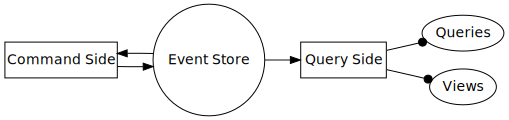
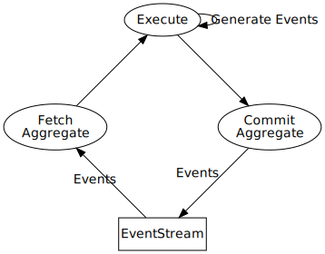

Conceptual Overview
Welcome to the manual of Wheel, a library for building Event Sourcing systems.
This manual is intended for people who want to build an Event Sourcing system and need to get a good overview of what Wheel provides.
Since Event Sourcing may not be a familiar architecture, and because some of the design choices that Wheel makes may be different from what’s expected coming from other Event Sourcing libraries, we want to describe the concepts in very general terms first, so that readers will get a reasonable understanding of the mechanisms and trade-offs involved.
Command/Query responsibility separation
Rill/Wheel is built assuming a CQRS-style separation between the Query (read) side and Command (write) side of an application, where state updates on the query side are completely determined by events from the Event Store, and the command side is responsible for generating new events.

The Wheel library contains tools for implementing the Command side of a CQRS system using Event Sourcing. Wheel builds on top of Rill, where Rill provides protocols and implementations of Event Stores and messages.
Storing state: events, streams and consistency again
In an Event Sourcing system, the source of truth is the append-only log of domain events, as committed in the Event Store. Events are messages that describe things that happened in the domain. In an Event Store, events are committed to a particular stream, which is similar to a topic in other message-based systems.
Consistency is provided by serializing commits to a stream; every event stream has a version, which is incremented every time events are committed to the stream. When a new set of events is committed to the stream, an expected version number can be provided, ensuring that the commit will only be accepted if the stream has not changed (i.e. no events were added to the stream since the new events were prepared).
Execute command:
Prepare state:
Fetch Events from Stream
Apply Events to State, setting StateVersion
Generate NewEvents based on State or return {Rejection}
Commit NewEvents to Stream when StreamVersion == StateVersion ; atomic
Return {Ok, Events} or {Conflict}
Pseudocode describing consistency mechanism. Note that the Commit with version check is an atomic operation
Commands, aggregates and consistency
In Wheel, state changes (new events) are generated by commands via aggregates. Aggregates describe all state of an event stream that is necessary to generate new events. You can think of an aggregate as an entity with a fixed identity mapped to the stream identifier, some state generated by applying the events in the stream to the aggregate, and a version number which is the number of events committed.
